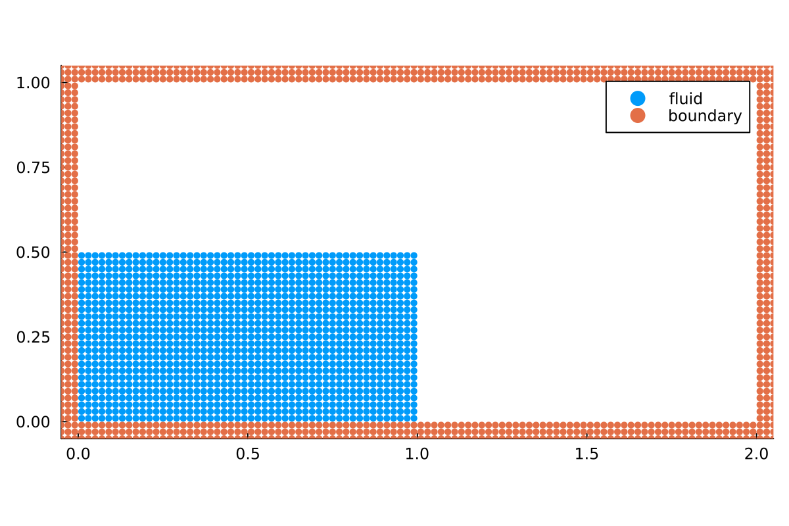
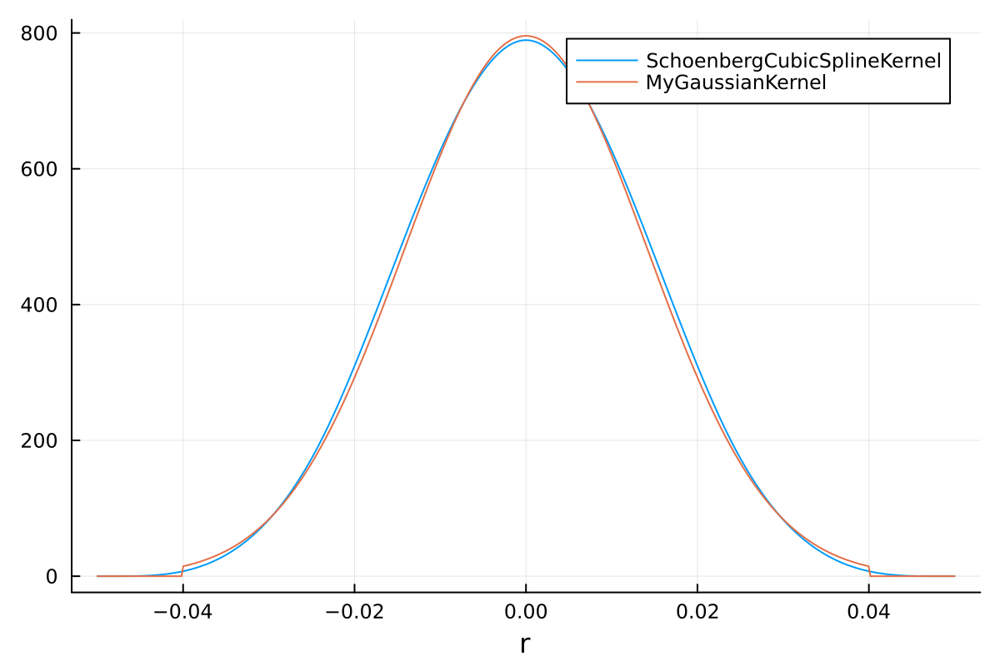

Setting up your simulation from scratch
In this tutorial, we will guide you through the general structure of simulation files. We will set up a simulation similar to the example simulation examples/fluid/dam_break_2d.jl, which is one of our simplest example simulations. In the second part of this tutorial, we will show how to replace components of TrixiParticles.jl by custom implementations from within a simulation file, without ever cloning the repository.
For different setups and physics, have a look at our other example files.
First, we import TrixiParticles.jl and OrdinaryDiffEq.jl, which we will use at the very end for the time integration.
using TrixiParticles
using OrdinaryDiffEqResolution
Now, we define the particle spacing, which is our numerical resolution. For a fluid, we usually call the variable fluid_particle_spacing, so that we can easily change the resolution of an example file by overwriting this variable with trixi_include. In 2D, the number of particles will grow quadratically, in 3D cubically with the spacing.
We also set the number of boundary layers, which need to be sufficiently large, depending on the smoothing kernel and smoothing length, so that the compact support of the smoothing kernel is fully sampled with particles for a fluid particle close to a boundary. In particular, we require the boundary thickness boundary_layers * fluid_particle_spacing to be larger than the compact support of the kernel. The compact support of each kernel can be found in the smoothing kernel overview.
fluid_particle_spacing = 0.02
boundary_layers = 3Experiment setup
We want to simulate a small dam break problem inside a rectangular tank. First, we define physical parameters like gravitational acceleration, simulation time, initial fluid size, tank size and fluid density.
gravity = 9.81
tspan = (0.0, 1.0)
initial_fluid_size = (1.0, 0.5)
tank_size = (2.0, 1.0)
fluid_density = 1000.0In order to have the initial particle mass and density correspond to the hydrostatic pressure gradient, we need to define a state equation, which relates the fluid density to pressure. Note that we could also skip this part here and define the state equation later when we define the fluid system, but then the fluid would be initialized with constant density, which would cause it to oscillate under gravity.
sound_speed = 10.0
state_equation = StateEquationCole(; sound_speed, reference_density=fluid_density,
exponent=7)The speed of sound here is numerical and not physical. We artificially lower the speed of sound, since the physical speed of sound in water would lead to prohibitively small time steps. The speed of sound in Weakly Compressible SPH should be chosen as small as possible for numerical efficiency, but large enough to limit density fluctuations to about 1%. We usually choose the speed of sound as $10 v_max$, where $v_max$ is the largest velocity in the simulation. In dam break simulations, the speed of sound is often chosen as $10 \sqrt{gH}$, where $H$ is the initial height of the water column and $g$ is the gravitational acceleration(@cite Adami2012).
TrixiParticles.jl requires the initial particle positions and quantities in form of an InitialCondition. Instead of manually defining particle positions, you can work with our pre-defined setups. Among others, we provide setups for rectangular shapes, circles, and spheres. Initial conditions can also be combined with common set operations. See this page for a list of pre-defined setups and details on set operations on initial conditions.
Here, we use the RectangularTank setup, which generates a rectangular fluid inside a rectangular tank, and supports a hydrostatic pressure gradient by passing a gravitational acceleration and a state equation (see above).
tank = RectangularTank(fluid_particle_spacing, initial_fluid_size, tank_size,
fluid_density, n_layers=boundary_layers,
acceleration=(0.0, -gravity), state_equation=state_equation)A RectangularTank consists of two InitialConditions, tank.fluid and tank.boundary. We can plot these initial conditions to visualize the initial setup.
using Plots
plot(tank.fluid, tank.boundary, labels=["fluid" "boundary"])
Fluid system
To model the water column, we use the Weakly Compressible Smoothed Particle Hydrodynamics (WCSPH) method. This method requires a smoothing kernel and a corresponding smoothing length, which should be chosen in relation to the particle spacing.
smoothing_length = 1.2 * fluid_particle_spacing
smoothing_kernel = SchoenbergCubicSplineKernel{2}()You can find an overview over smoothing kernels and corresponding smoothing lengths here.
For stability, we need numerical dissipation in form of an artificial viscosity term. Other viscosity models offer a physical approach based on the kinematic viscosity of the fluid.
viscosity = ArtificialViscosityMonaghan(alpha=0.02, beta=0.0)We choose the parameters as small as possible to avoid non-physical behavior, but as large as possible to stabilize the simulation.
The WCSPH method can either compute the particle density directly with a kernel summation over all neighboring particles (see SummationDensity) or by making the particle density a variable in the ODE system and integrating its change over time. We choose the latter approach here by using the density calculator ContinuityDensity, which is more efficient and handles free surfaces without the need for additional correction terms. The simulation quality greatly benefits from using density diffusion.
fluid_density_calculator = ContinuityDensity()
density_diffusion = DensityDiffusionMolteniColagrossi(delta=0.1)
fluid_system = WeaklyCompressibleSPHSystem(tank.fluid, fluid_density_calculator,
state_equation, smoothing_kernel,
smoothing_length, viscosity=viscosity,
density_diffusion=density_diffusion,
acceleration=(0.0, -gravity))Boundary system
To model the boundary, we use particle-based boundary conditions, in which particles are sampled in the boundary that interact with the fluid particles to avoid penetration. In order to define a boundary system, we first have to choose a boundary model, which defines how the fluid interacts with boundary particles. We will use the BoundaryModelDummyParticles with AdamiPressureExtrapolation. See here for a comprehensive overview over boundary models.
boundary_model = BoundaryModelDummyParticles(tank.boundary.density, tank.boundary.mass,
state_equation=state_equation,
AdamiPressureExtrapolation(),
smoothing_kernel, smoothing_length)
boundary_system = BoundarySPHSystem(tank.boundary, boundary_model)Semidiscretization
The key component of every simulation is the Semidiscretization, which couples all systems of the simulation. All simulation methods in TrixiParticles.jl are semidiscretizations, which discretize the equations in space to provide an ordinary differential equation that still has to be solved in time. By providing a simulation time span, we can call semidiscretize, which returns an ODEProblem that can be solved with a time integration method.
semi = Semidiscretization(fluid_system, boundary_system)
ode = semidiscretize(semi, tspan)Time integration
We use the methods provided by OrdinaryDiffEq.jl, but note that other packages or custom implementations can also be used.
OrdinaryDiffEq.jl supports callbacks, which are executed during the simulation. For this simulation, we use the InfoCallback, which prints information about the simulation setup at the beginning of the simulation, information about the current simulation time and runtime during the simulation, and a performance summary at the end of the simulation. We also want to save the current solution in regular intervals in terms of simulation time as VTK, so that we can look at the solution in ParaView. The SolutionSavingCallback provides this functionality. To pass the callbacks to OrdinaryDiffEq.jl, we have to bundle them into a CallbackSet.
info_callback = InfoCallback(interval=50)
saving_callback = SolutionSavingCallback(dt=0.02)
callbacks = CallbackSet(info_callback, saving_callback)Finally, we can start the simulation by solving the ODEProblem. We use the method RDPK3SpFSAL35 of OrdinaryDiffEq.jl, which is a Runge-Kutta method with automatic (error based) time step size control. This method is usually a good choice for prototyping, since we do not have to worry about choosing a stable step size and can just run the simulation. For better performance, it might be beneficial to tweak the tolerances of this method or choose a different method that is more efficient for the respective simulation. You can find both approaches in our example files. Here, we just use the method with the default parameters, and only disable save_everystep to avoid expensive saving of the solution in every time step.
julia> sol = solve(ode, RDPK3SpFSAL35(), save_everystep=false, callback=callbacks);
See Visualization for how to visualize the final solution. For the simplest visualization, we can use Plots.jl:
using Plots
plot(sol)
Replacing components with custom implementations
If we would like to use an implementation of a component that is not available in TrixiParticles.jl, we can implement it ourselves within the simulation file, without ever cloning the TrixiParticles.jl repository. A good starting point is to check out the available implementations in TrixiParticles.jl, then copy the relevant functions to the simulation file and modify them as needed.
Custom smoothing kernel
To implement a custom smoothing kernel, we define a struct extending TrixiParticles.SmoothingKernel. This abstract struct has a type parameter for the number of dimensions, which we set to 2 in this case.
struct MyGaussianKernel <: TrixiParticles.SmoothingKernel{2} endThis kernel is going to be an implementation of the Gaussian kernel with a cutoff for compact support, which reads
\[W(r, h) = \begin{cases} \frac{1}{\pi h^2} \exp(-(r/h)^2) & \text{for } r < 2h\\ 0 & \text{for } r \geq 2h. \end{cases}\]
Note that the same kernel in a more optimized version and with a cutoff at $3$ is already implemented in TrixiParticles.jl as GaussianKernel.
In order to use our new kernel, we have to define three functions. TrixiParticles.kernel, which is the kernel function itself, TrixiParticles.kernel_deriv, which is the derivative of the kernel function, and TrixiParticles.compact_support, which defines the compact support of the kernel in relation to the smoothing length. The latter is relevant for determining the search radius of the neighborhood search.
function TrixiParticles.kernel(kernel::MyGaussianKernel, r, h)
q = r / h
if q < 2
return 1 / (pi * h^2) * exp(-q^2)
end
return 0.0
end
function TrixiParticles.kernel_deriv(kernel::MyGaussianKernel, r, h)
q = r / h
if q < 2
return 1 / (pi * h^2) * (-2 * q) * exp(-q^2) / h
end
return 0.0
end
TrixiParticles.compact_support(::MyGaussianKernel, h) = 2 * hFor this kernel, we use a different smoothing length, which yields a similar kernel to the SchoenbergCubicSplineKernel that we used earlier.
smoothing_length_gauss = 1.0 * fluid_particle_spacingWe can compare these kernels in a plot.
using Plots
x = range(-0.05, 0.05, length=500)
plot(x, r -> TrixiParticles.kernel(SchoenbergCubicSplineKernel{2}(), abs(r), smoothing_length),
label="SchoenbergCubicSplineKernel", xlabel="r")
plot!(x, r -> TrixiParticles.kernel(MyGaussianKernel(), abs(r), smoothing_length_gauss),
label="MyGaussianKernel")
This is all we need to use our custom kernel implementation in a simulation. We only need to replace the definition above by
smoothing_kernel = MyGaussianKernel()and run the simulation file again.
In order to use our kernel in a pre-defined example file, we can use the function trixi_include to replace the definition of the variable smoothing_kernel. The following will run the example simulation examples/fluid/hydrostatic_water_column_2d.jl with our custom kernel and the corresponding smoothing length.
julia> trixi_include(joinpath(examples_dir(), "fluid", "hydrostatic_water_column_2d.jl"), smoothing_kernel=MyGaussianKernel());